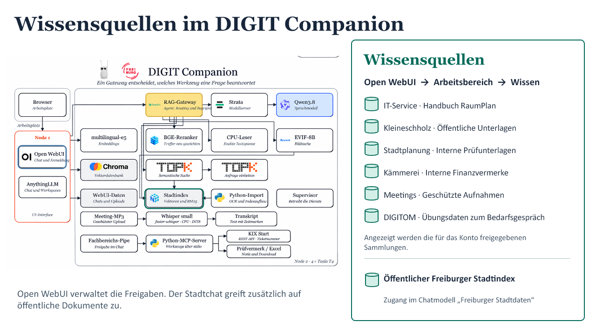

In Open WebUI wählt ein Team eine freigegebene Wissenssammlung. Jede Sammlung kann mehrere Dateien enthalten. Welche Technik eine Datei durchsuchbar macht, hängt vom Inhalt ab.

Auf der T4-Demo sind sechs Sammlungen hinterlegt. Jedes Konto sieht die für dieses Konto freigegebene Auswahl.
Die Testkonten für Stadtplanung und Kämmerei sehen beide IT-Service und Kleineschholz. Als dritte Sammlung sieht jedes Konto die internen Unterlagen seines Fachbereichs.
🗄️ Öffentlicher Freiburger Stadtindex · Über das Chatmodell „Freiburger Stadtdaten“ erreichbar. Die Originalquellen und der Suchindex werden separat importiert. Unter „Wissen“ gibt es dafür keinen eigenen Sammlungseintrag.
„Was wurde in Meeting001 besprochen?“
Leserecht für die Aufnahme prüfen → gespeichertes Transkript laden → passende Aussagen mit Zeitmarken im Chat zeigen. Fehlt eine aktuelle Abschrift, erzeugt Whisper small sie aus der MP3. Das Original bleibt im Uploadspeicher von Open WebUI. Die Abschrift liegt im geschützten Transkriptspeicher.
„Was hilft bei RP-12?“
Freigegebenes Handbuch auswählen → mit dem Embedding-Modell und Chroma passende Textstellen finden → Lösungsschritte mit Originalquelle im Chat zeigen.
„Kannst du ein Ticket anlegen?“
Die Fachbereichs-Pipe bereitet einen Entwurf vor → die Person bestätigt → das Ticketwerkzeug legt den Fall in KIX an → die Ticketnummer erscheint im Chat.
| Symbol im Schaubild | Kategorie | Beispiel im DIGIT Companion |
|---|---|---|
| 🗄️ Grüner Zylinder im Schaubild | Inhaltlicher Wissensbestand | Open-WebUI-Sammlung oder öffentlicher Stadtbestand. Die Position im Kasten zeigt, wo er erreichbar ist. |
| 📄 Blatt oder 🎵 Audiodatei | Quelldatei | Handbuch oder Originalaufnahme Meeting001.mp3 |
| 📄 Blatt mit Uhr | Abgeleitete Datei | Transkript mit Start- und Endzeit jeder Passage |
| ▱ Modellkachel | KI-Modell | Whisper small verschriftlicht Sprache. multilingual-e5-small berechnet Suchvektoren. |
| Chroma-Logo | Technischer Speicher | Chroma speichert den Vektorindex für die Suche in Textsammlungen. |
| ⚙️ Zahnrad in Open WebUI | Python-Erweiterung | Die Fachbereichs-Pipe steuert den Ablauf im Fachbereichschat. |
| 🔧 Werkzeug | Ausführbare Aktion | Ein Ticket nach Zustimmung in KIX anlegen |
| ▢ Anwendung | Fachsystem | KIX speichert das Ticket und vergibt die Ticketnummer. |
Der öffentliche Freiburger Stadtindex ist eine weitere, separat aufgebaute Quelle für den Stadtchat. Die Freigabe eines öffentlichen Dokuments öffnet keine privaten Meetings oder Fachbereichsunterlagen.